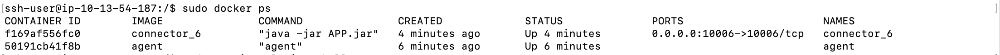
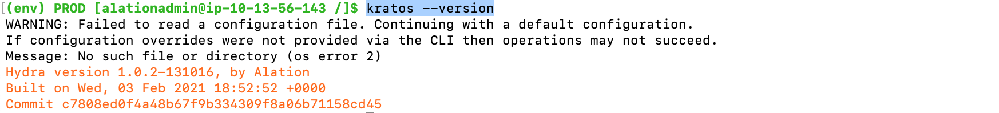
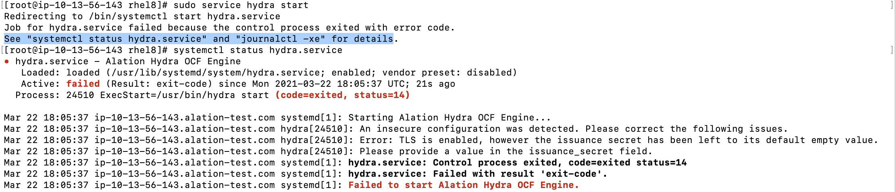
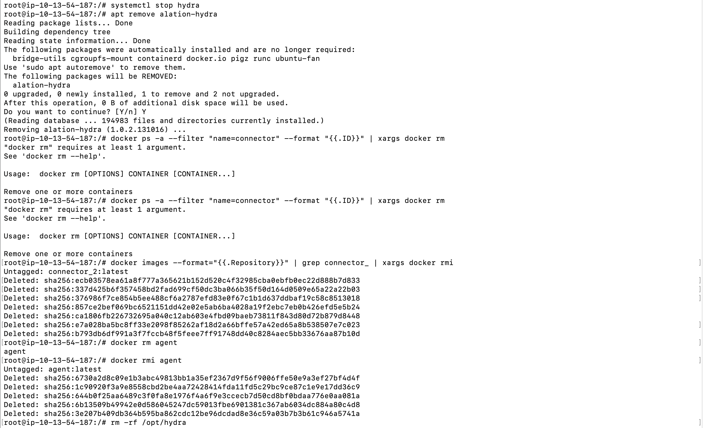

Maintaining OCF Connectors¶
Customer Managed Applies to customer-managed instances of Alation
This information is intended for Alation admins maintaining OCF connectors on the Alation host.
OCF CLI Tools¶
An OCF BI connector consists of a manifest file and a Docker image.
The manifest information is stored inside Alation, while the Docker images are installed outside of the Alation shell and managed by Alation Connector Manager. Alation Connector Manager has a command line tool Kratos for directly working with Alation Connector Manager agent. Every command and sub-command of Kratos comes with built-in help documentation.
To print Kratos help to the console:
SSH to the Alation host.
Run:
kratos --help
The Alation server has another CLI tool that serves as a wrapper around the OCF components of the Alation application and Alation Connector Manager: Ypireti. Ypireti can be used to call Kratos commands from the Alation shell and to install and manage OCF connectors.
Important
Ypireti commands must be run from the Alation shell as user
alation.
To print alation_ypireti help to the console:
On the Alation host, enter the Alation shell:
sudo /etc/init.d/alation shell
Change user to
alation:sudo su alation
Run:
alation_ypireti --help
Start, Stop, Restart Alation Connector Manager¶
Run these commands on the Alation host outside of the Alation shell.
To start Alation Connector Manager:
sudo service hydra start
To stop Alation Connector Manager:
sudo service hydra stop
To restart Alation Connector Manager:
sudo service hydra restart
Check Which Docker Containers Are Running¶
Run this command on the Alation host outside of the Alation shell.
sudo docker ps
{kind=link}
Check Alation Connector Manager Version¶
From the Alation shell, run:
kratos --version
The command outputs the currently installed version of Alation Connector Manager:
{kind=link}
Alation Connector Manager Warning Message¶
You may receive the following warning message in the console output of some Kratos or Ypireti commands:
WARNING: Failed to read a configuration file. Continuing with a default configuration. If configuration overrides were not provided via the CLI then operations may not succeed. Message: No such file or directory (os error 2)
By default, Kratos expects a hydra.toml configuration file, but alation_ypireti passes all the arguments to Kratos using command line arguments. Kratos issues a warning that it did not find the configuration file and will use the default values. You can disregard this warning message.
List OCF Connectors and Their Properties¶
Note
alation_ypireti commands must be run from the Alation shell as user alation.
List All Installed OCF Connectors and Their Full Metadata¶
alation_ypireti list
List Metadata for a Connector with a Specific ID¶
alation_ypireti list --id <ID>
{kind=link}
List Specific Metadata Fields of All Installed Connectors¶
alation_ypireti list --fields <field1_name> <field2_name>
Example: alation_ypireti list --fields id name description
{kind=link}
List Specific Metadata Fields of a Specific Installed Connector¶
alation_ypireti list --id <ID> --fields <field1_name> <field2_name>
Example: alation_ypireti list --id 2 --fields name description
{kind=link}
List Connector ID and Respective Container ID¶
This command outputs the hydra field metadata for OCF connectors:
alation_ypireti kratos --subcommand list
{kind=link}
Update a Connector¶
Use the command below to update an installed OCF connector with a newer connector version. This command will update:
the connector metadata
the connector Docker image on Alation Connector Manager
point Alation data sources to using the updated connector
alation_ypireti update --path <path_to_file> --id <ID>
where:
--path: The path to the newer connector version, that we want to install--id: The ID of the connector that is being updated. The ID can be found using thelistcommand.
{kind=link}
After updating the connector, open the Settings page of the Alation source that uses this connector and verify that all the required parameters are filled in and test connection.
Important
OCF connectors that are installed or updated on Alation version 2021.2 or newer are copied to the backup path at /opt/alation/site/site_data/ocf/connectors/ (path inside the shell) and backed up by the Alation backup process.
Synchronize Connectors¶
Available from release 2021.2
The goal of the “synchronize” command is to ensure that the Alation application and Alation Connector Manager have exactly the same set of connectors and are synchronized:
alation_ypireti syncThis command should be used for restoring the OCF system after a backup or after failover on HA Pair:
Starting with release 2021.2, when an OCF connector is installed or updated, its source file is added to the backup path at /opt/alation/site/site_data/ocf/connectors/ (path inside the shell). The alation_ypireti sync command uses the files in this directory to restore the connectors on an Alation instance. It will first delete all connector records on Alation Connector Manager and then install the connectors from the backup source files, ensuring that the Alation Server and the Alation Connector Manager agent have the same set of connectors.
Delete a Connector¶
It is possible to delete an OCF connector, which uninstalls the corresponding Docker image and removes it from the connector registry on Alation Connector Manager.
Note
If the same connector, is installed again later, it will be considered a new connector by Alation Connector Manager and will be given a new ID.
If there are Alation sources using this connector, use the --force flag with the delete command:
alation_ypireti delete [--force] --id <ID>
where:
--id: The ID of the connector that is being deleted. The ID can be found using thelistcommand.
Example 1: to delete a connector that is not used by any Alation source: alation_ypireti delete --id 6
{kind=link}
Example 2: to delete a connector used by an Alation source: alation_ypireti delete --force --id 2
{kind=link}
OCF Logs¶
Alation Connector Manager Logs¶
Agent logs can be retrieved using Docker commands:
# tail logs docker logs -f agent # save logs to a file docker logs agent >& agent.logs
To view Alation Connector Manager error messages using systemctl:
# run this command as root user systemctl status hydra.service
{kind=link}
Alation Connector Manager NGINX logs can be found at /opt/hydra/agent/logs.
OCF Connector Logs¶
Applies from release 2020.4
Logs from the Ypireti operations are printed to the console. You can also use the commands give below to work with the logs.
# Tail logs
alation_ypireti kratos --subcommand tail <ID>
# Get full logs
alation_ypireti kratos --subcommand logs <ID>
alation_ypireti kratos --subcommand logs --since 2020-08-15 <ID>
# Redirect logs to a file
alation_ypireti kratos --subcommand logs <ID> > connector_3.log 2>&1
where <ID> is the specific connector ID.
Metadata Extraction Logs¶
Metadata extraction logs are written to /opt/alation/site/logs/celery-default_error.log (path inside the Alation shell).
Uninstall OCF¶
Use these steps to completely uninstall all OCF components from the Alation host.
On the Alation host, outside of the Alation shell, stop Alation Connector Manager:
systemctl stop hydra
Uninstall Alation Connector Manager using the appropriate YUM or APT command:
yum remove alation-hydra
apt remove alation-hydra
Note
This command will not remove the Alation Connector Manager configuration files from /etc/hydra. If you wish to delete the configuration files too, remove them separately after uninstalling OCF.
Delete all containers and images:
docker ps -a --filter "name=connector" --format "{{.ID}}" | xargs docker rm docker images --format="{{.Repository}}" | grep connector_ | xargs docker rmi docker rm agent docker rmi agent
Delete the Alation Connector Manager directory at /opt:
rm -rf /opt/hydra
If you wish to remove configuration files too, delete the configuration files:
rm -rf /etc/hydra
{kind=link}